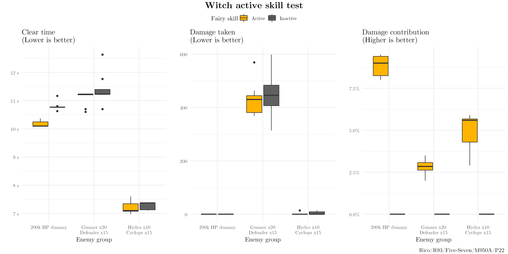
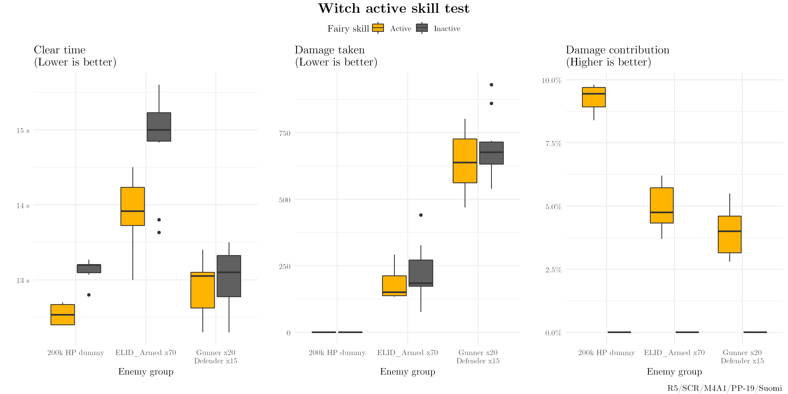

Witch is rather clearly an excellent statstick fairy, and its active skill appears to add on even more damage:
Skill: Black Potion
In the next battle, deal 150 fixed damage to all enemies that ignores armour and evasion, and inflict Corrosion status. Deal corrosion damage equal to 10% of lost HP every 3 seconds. Corrosion damage ignores armor, evasion and HP shields, and caps at 9999 damage, but will not kill the enemy. [IOP wiki unofficial translation]
However, it's a bit more challenging to understand than the usual actives as seen on Warrior/Shield/Fury/Anna/Sehra & Nina and so on. Let's do a few tests to see how much this contributes in real combat.

From left to right, average clear times improved by 5.5/2.5/1.0% with Witch's active skill on.

From left to right, average clear times improved by 4.5/6.5/1.0% with Witch's active skill on.
Conclusion#
Witch Fairy's active skill effectively increases echelon DPS by ~1-10%; clear times by a bit less. It unsurprisingly has more impact against high-HP enemies, and does very little against softer mobs. This is a fair bit smaller than typical fairy actives. As Witch would still be a great statstick with no skill at all, it's hard to complain much. If you don't need a specific fairy skill, or would like to save fairy commands, you probably should be using Witch.
Also, keep in mind that a minor boost to a top-tier option is almost always better than a significant boost to a sub-par option. I would much prefer to level Witch's skill over Warrior/Fury/Anna/Sehra & Nina and so on.